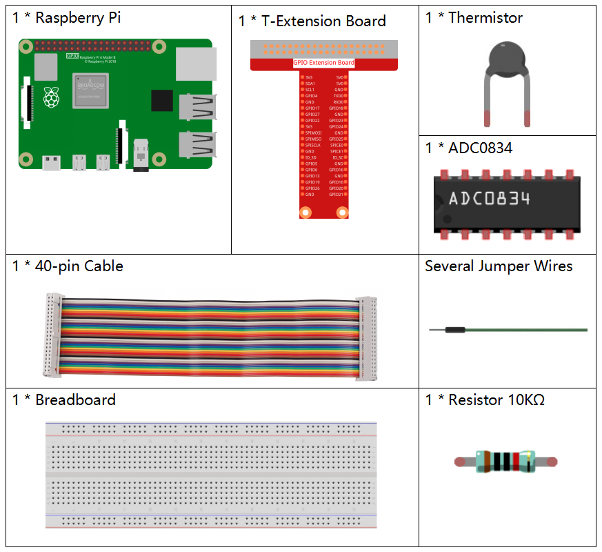
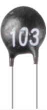
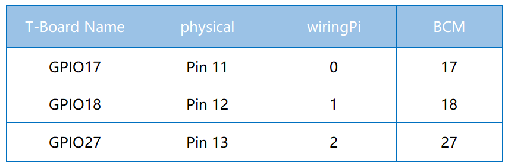
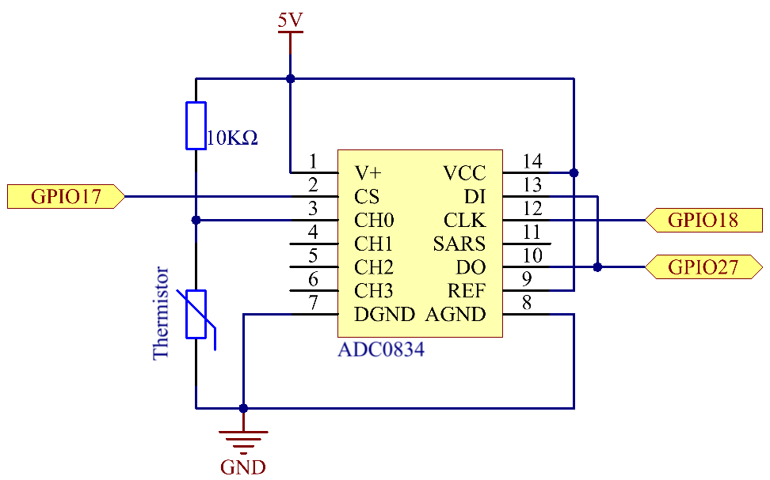

Nota
¡Hola! Bienvenidos a la comunidad de entusiastas de SunFounder para Raspberry Pi, Arduino y ESP32 en Facebook. Profundiza en el mundo de Raspberry Pi, Arduino y ESP32 junto a otros entusiastas.
¿Por qué unirse?
Soporte experto: Resuelve problemas post-venta y desafíos técnicos con la ayuda de nuestra comunidad y equipo.
Aprende y comparte: Intercambia consejos y tutoriales para mejorar tus habilidades.
Vista previa exclusiva: Obtén acceso anticipado a anuncios de nuevos productos y adelantos.
Descuentos especiales: Disfruta de descuentos exclusivos en nuestros productos más recientes.
Promociones y sorteos festivos: Participa en sorteos y promociones especiales en fechas festivas.
👉 ¿Listo para explorar y crear con nosotros? ¡Haz clic en [Aquí] y únete hoy!
2.2.2 Thermistor
Introducción
Al igual que la fotorresistencia puede detectar la luz, un termistor es un dispositivo electrónico sensible a la temperatura que puede usarse para funciones de control de temperatura, como activar una alarma de calor.
Componentes
Principio
Un termistor es una resistencia sensible a la temperatura que exhibe un cambio preciso y predecible en la resistencia proporcional a pequeños cambios de temperatura. Cuánto cambia su resistencia depende de su composición única. Los termistores forman parte de un grupo más grande de componentes pasivos que, a diferencia de sus contrapartes activas, no proporcionan ganancia de potencia o amplificación a un circuito.
El termistor es un elemento sensible que presenta dos tipos: Coeficiente de Temperatura Negativo (NTC) y Coeficiente de Temperatura Positivo (PTC). Su resistencia varía significativamente con la temperatura. La resistencia de un termistor PTC aumenta con la temperatura, mientras que en el caso del NTC es lo contrario. En este experimento usamos un termistor NTC.
El principio es que la resistencia del termistor NTC cambia con la temperatura del entorno. Detecta la temperatura en tiempo real. Cuando la temperatura aumenta, la resistencia del termistor disminuye. Luego, el convertidor A/D convierte los datos de voltaje en cantidades digitales, y la temperatura en grados Celsius o Fahrenheit se muestra mediante programación.
En este experimento se utiliza un termistor y una resistencia pull-up de 10k. Cada termistor tiene una resistencia normal, que en este caso es de 10k ohmios, medida a 25 grados Celsius.
Aquí está la relación entre la resistencia y la temperatura:
RT =RN expB(1/TK – 1/TN)
RT es la resistencia del termistor NTC cuando la temperatura es TK.
RN es la resistencia del termistor NTC bajo la temperatura nominal TN, cuyo valor es 10k.
TK es una temperatura en Kelvin y la unidad es K, donde el valor numérico de TK es 273.15 + grados Celsius.
TN es la temperatura nominal en Kelvin, también en K. Su valor es 273.15+25.
B (beta), es la constante del material del termistor NTC, conocida también como índice de sensibilidad térmica, con un valor numérico de 3950.
exp es la abreviatura de exponencial, y el número base e es un número natural que aproximadamente es igual a 2.7.
Convertir esta fórmula TK=1/(ln(RT/RN)/B+1/TN) permite obtener la temperatura en Kelvin, de la cual, al restarle 273.15, se obtiene en grados Celsius.
Esta relación es una fórmula empírica y solo es precisa cuando la temperatura y la resistencia están dentro del rango efectivo.
Diagrama Esquemático
 Procedimientos Experimentales
Paso 1: Construye el circuito.

Para usuarios de lenguaje C
Paso 2: Ve a la carpeta del código.
cd ~/davinci-kit-for-raspberry-pi/c/2.2.2/
Paso 3: Compila el código.
gcc 2.2.2_Thermistor.c -lwiringPi -lm
Nota
-lm es para cargar la biblioteca matemática. No omitir, o se generará un error.
Paso 4: Ejecuta el archivo ejecutable.
sudo ./a.out
Al ejecutar el código, el termistor detectará la temperatura ambiente, que se imprimirá en pantalla una vez que finalice el cálculo del programa.
Nota
Si el programa no funciona después de ejecutarlo o aparece un mensaje de error que dice: «wiringPi.h: No such file or directory», consulta la sección c code is not working?.
Código
#include <wiringPi.h>
#include <stdio.h>
#include <math.h>
typedef unsigned char uchar;
typedef unsigned int uint;
#define ADC_CS 0
#define ADC_CLK 1
#define ADC_DIO 2
uchar get_ADC_Result(uint channel)
{
uchar i;
uchar dat1=0, dat2=0;
int sel = channel > 1 & 1;
int odd = channel & 1;
digitalWrite(ADC_CLK, 1);
delayMicroseconds(2);
digitalWrite(ADC_CLK, 0);
delayMicroseconds(2);
pinMode(ADC_DIO, OUTPUT);
digitalWrite(ADC_CS, 0);
// Bit de inicio
digitalWrite(ADC_CLK,0);
digitalWrite(ADC_DIO,1); delayMicroseconds(2);
digitalWrite(ADC_CLK,1); delayMicroseconds(2);
// Modo de entrada simple
digitalWrite(ADC_CLK,0);
digitalWrite(ADC_DIO,1); delayMicroseconds(2);
digitalWrite(ADC_CLK,1); delayMicroseconds(2);
// IMPAR
digitalWrite(ADC_CLK,0);
digitalWrite(ADC_DIO,odd); delayMicroseconds(2);
digitalWrite(ADC_CLK,1); delayMicroseconds(2);
// Selección
digitalWrite(ADC_CLK,0);
digitalWrite(ADC_DIO,sel); delayMicroseconds(2);
digitalWrite(ADC_CLK,1);
digitalWrite(ADC_DIO,1); delayMicroseconds(2);
digitalWrite(ADC_CLK,0);
digitalWrite(ADC_DIO,1); delayMicroseconds(2);
for(i=0;i<8;i++)
{
digitalWrite(ADC_CLK,1); delayMicroseconds(2);
digitalWrite(ADC_CLK,0); delayMicroseconds(2);
pinMode(ADC_DIO, INPUT);
dat1=dat1<<1 | digitalRead(ADC_DIO);
}
for(i=0;i<8;i++)
{
dat2 = dat2 | ((uchar)(digitalRead(ADC_DIO))<<i);
digitalWrite(ADC_CLK,1); delayMicroseconds(2);
digitalWrite(ADC_CLK,0); delayMicroseconds(2);
}
digitalWrite(ADC_CS,1);
pinMode(ADC_DIO, OUTPUT);
return(dat1==dat2) ? dat1 : 0;
}
int main(void)
{
unsigned char analogVal;
double Vr, Rt, temp, cel, Fah;
if(wiringPiSetup() == -1){ // cuando falla la inicialización de wiringPi, imprime mensaje en pantalla
printf("setup wiringPi failed !");
return 1;
}
pinMode(ADC_CS, OUTPUT);
pinMode(ADC_CLK, OUTPUT);
while(1){
analogVal = get_ADC_Result(0);
Vr = 5 * (double)(analogVal) / 255;
Rt = 10000 * (double)(Vr) / (5 - (double)(Vr));
temp = 1 / (((log(Rt/10000)) / 3950)+(1 / (273.15 + 25)));
cel = temp - 273.15;
Fah = cel * 1.8 +32;
printf("Celsius: %.2f C Fahrenheit: %.2f F\n", cel, Fah);
delay(100);
}
return 0;
}
Explicación del Código
#include <math.h>
Esta es una biblioteca de funciones matemáticas en C que permite realizar operaciones y transformaciones numéricas comunes.
analogVal = get_ADC_Result(0);
Esta función se utiliza para leer el valor del termistor.
Vr = 5 * (double)(analogVal) / 255;
Rt = 10000 * (double)(Vr) / (5 - (double)(Vr));
temp = 1 / (((log(Rt/10000)) / 3950)+(1 / (273.15 + 25)));
cel = temp - 273.15;
Fah = cel * 1.8 +32;
printf("Celsius: %.2f C Fahrenheit: %.2f F\n", cel, Fah);
Estos cálculos convierten los valores del termistor en grados Celsius.
Vr = 5 * (double)(analogVal) / 255;
Rt = 10000 * (double)(Vr) / (5 - (double)(Vr));
Estas líneas calculan la distribución de voltaje a partir del valor leído (analogVal) para obtener Rt (resistencia del termistor).
temp = 1 / (((log(Rt/10000)) / 3950)+(1 / (273.15 + 25)));
Este cálculo usa Rt en la fórmula TK=1/(ln(RT/RN)/B+1/TN) para obtener la temperatura en Kelvin.
temp = temp - 273.15;
Convierte la temperatura de Kelvin a grados Celsius.
Fah = cel * 1.8 +32;
Convierte la temperatura de grados Celsius a Fahrenheit.
printf("Celsius: %.2f C Fahrenheit: %.2f F\n", cel, Fah);
Imprime en pantalla los valores en grados Celsius, Fahrenheit y sus unidades.
Para Usuarios de Python
Paso 2: Ve a la carpeta del código.
cd ~/davinci-kit-for-raspberry-pi/python/
Paso 3: Ejecuta el archivo ejecutable
sudo python3 2.2.2_Thermistor.py
Con el código en ejecución, el termistor detectará la temperatura ambiente, la cual se imprimirá en la pantalla al finalizar el cálculo del programa.
Código
Nota
Puedes Modificar/Restablecer/Copiar/Ejecutar/Detener el código a continuación. Pero antes de eso, debes ir a la ruta del código fuente, como davinci-kit-for-raspberry-pi/python.
import RPi.GPIO as GPIO
import ADC0834
import time
import math
def init():
ADC0834.setup()
def loop():
while True:
analogVal = ADC0834.getResult()
Vr = 5 * float(analogVal) / 255
Rt = 10000 * Vr / (5 - Vr)
temp = 1/(((math.log(Rt / 10000)) / 3950) + (1 / (273.15+25)))
Cel = temp - 273.15
Fah = Cel * 1.8 + 32
print ('Celsius: %.2f C Fahrenheit: %.2f F' % (Cel, Fah))
time.sleep(0.2)
if __name__ == '__main__':
init()
try:
loop()
except KeyboardInterrupt:
ADC0834.destroy()
Explicación del Código
import math
Esta es una biblioteca de funciones numéricas que declara un conjunto de funciones para realizar operaciones y transformaciones matemáticas comunes.
analogVal = ADC0834.getResult()
Esta función se usa para leer el valor del termistor.
Vr = 5 * float(analogVal) / 255
Rt = 10000 * Vr / (5 - Vr)
temp = 1/(((math.log(Rt / 10000)) / 3950) + (1 / (273.15+25)))
Cel = temp - 273.15
Fah = Cel * 1.8 + 32
print ('Celsius: %.2f °C Fahrenheit: %.2f ℉' % (Cel, Fah))
Estos cálculos convierten los valores del termistor en grados Celsius y Fahrenheit.
Vr = 5 * float(analogVal) / 255
Rt = 10000 * Vr / (5 - Vr)
Estas dos líneas de código calculan la distribución de voltaje con el valor analógico leído para obtener Rt (resistencia del termistor).
temp = 1/(((math.log(Rt / 10000)) / 3950) + (1 / (273.15+25)))
Este cálculo introduce Rt en la fórmula TK=1/(ln(RT/RN)/B+1/TN) para obtener la temperatura en Kelvin.
temp = temp - 273.15
Convierte la temperatura de Kelvin a grados Celsius.
Fah = Cel * 1.8 + 32
Convierte la temperatura de grados Celsius a grados Fahrenheit.
print ('Celsius: %.2f °C Fahrenheit: %.2f ℉' % (Cel, Fah))
Imprime los valores en grados Celsius y Fahrenheit con sus unidades en la pantalla.
Imagen del Fenómeno